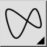

Dette er en automatisk oversættelse.
Spline (kontrolpunkter)
Værktøjslinje/ikon:


Menu: Tegne > Spline > Spline (kontrolpunkter)
Genvej: S, P
Kommandoer: spline | sp
Beskrivelse
Tegner spline-kurver fra kontrolpunkter. Ikke-uniforme rationelle B-Splines
(NURBS) med homogene vægtningsfaktorer er de eneste splines, der
understøttes.
Anvendelse
- Vælg graden af spline i værktøjslinjen for indstillinger. De
understøttede grader er 2 (kvadratisk b-spline) og 3 (kubisk b-spline). Jo
højere grad, jo "glattere" bliver kurven.
Bemærk, at en kvadratisk b-spline pr. definition kræver mindst 3
kontrolpunkter, mens en kubisk b-spline har mindst 4 kontrolpunkter.
- Marker afkrydsningsfeltet "Closed" (lukket) i værktøjslinjen for
indstillinger, hvis du vil oprette en lukket spline. Lukkede splines er
kontinuerlige lukkede sløjfer.
- Angiv kontrolpunkterne. Når du har defineret det tredje (for
kvadratiske b-splines) eller fjerde (for kubiske b-splines) kontrolpunkt,
vises en forhåndsvisning. Du kan fjerne det sidste kontrolpunkt igen ved at
klikke på knappen "Undo" (Fortryd) i værktøjslinjen for indstillinger.
- Tryk på Escape eller klik på højre museknap efter indstilling af det
sidste punkt for at bekræfte splineformen.
- Du kan nu oprette en anden spline eller højreklikke igen for at
afslutte værktøjet.
Eksempel på to åbne splines (kvadratisk og kubisk):

Eksempel på to lukkede, periodiske splines (kvadratisk og kubisk)